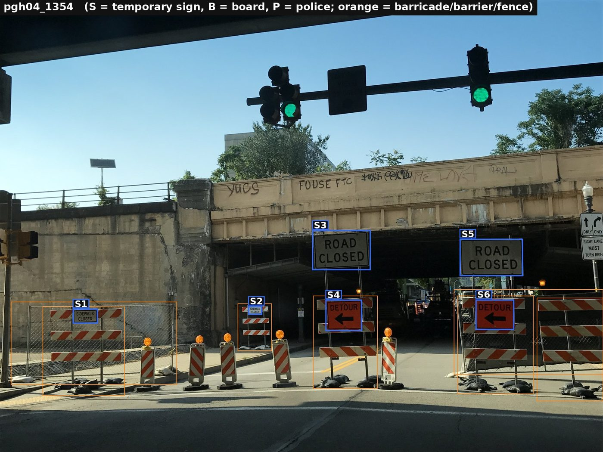
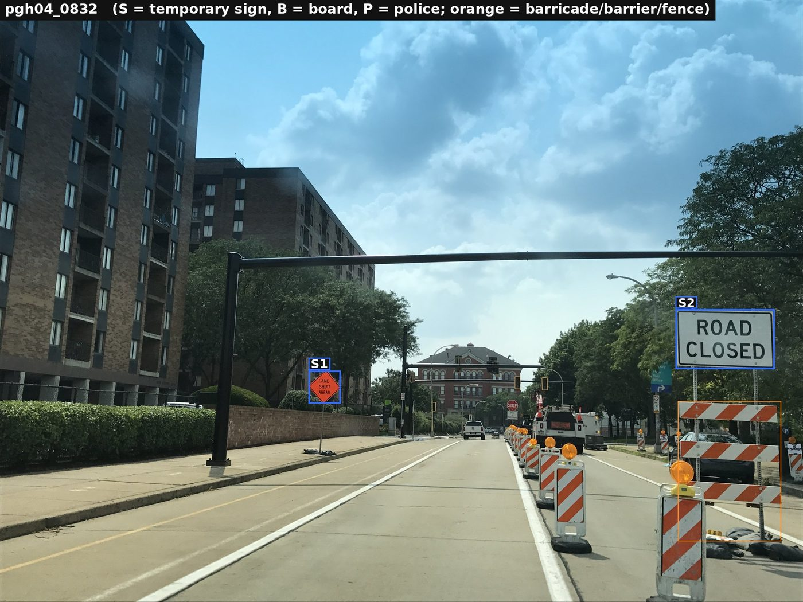
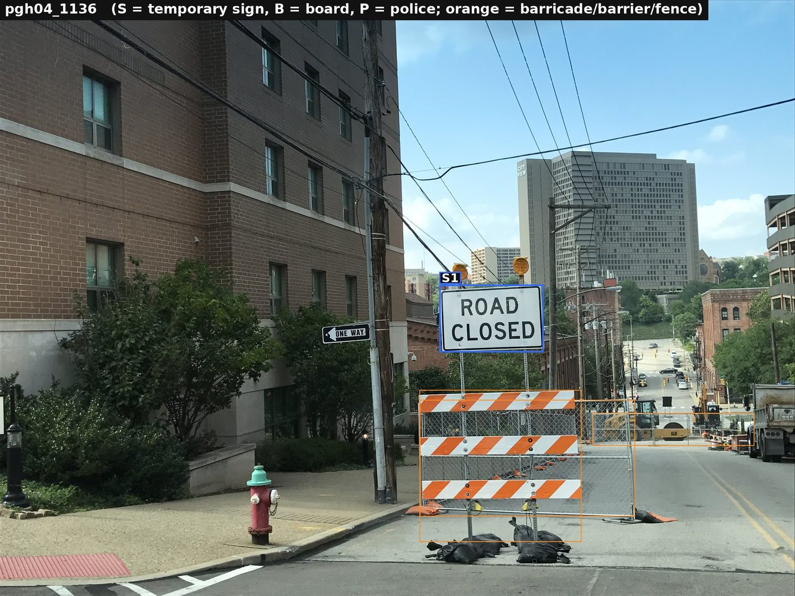
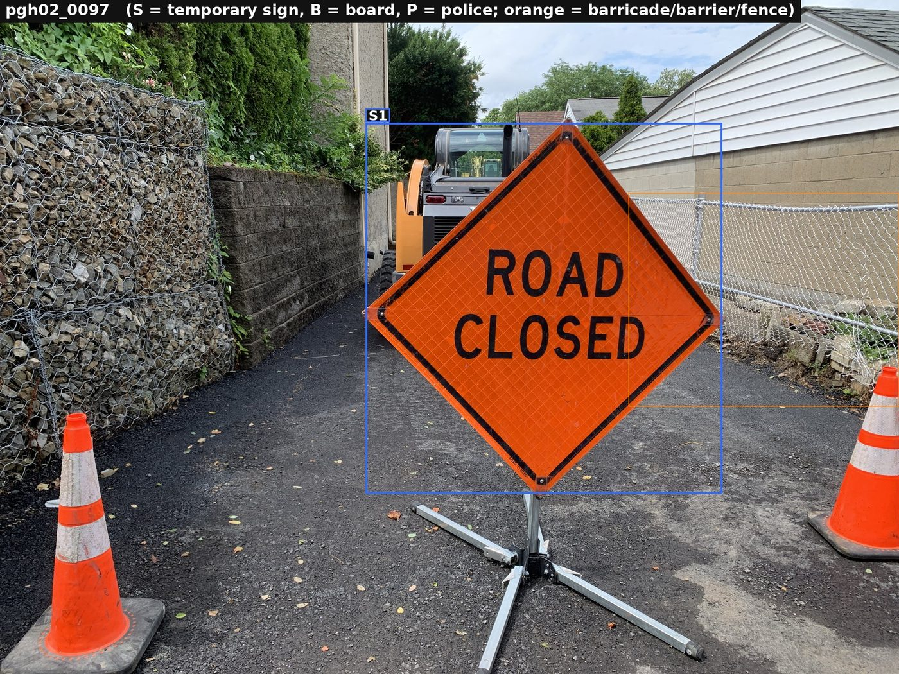

<title>RuleShift Annotation Guide</title>
<link rel="preconnect" href="https://fonts.googleapis.com">
<link rel="preconnect" href="https://fonts.gstatic.com" crossorigin>
<link rel="stylesheet" href="https://fonts.googleapis.com/css2?family=Overpass:wght@400;600;700;800;900&family=Overpass+Mono:wght@400;600&family=Source+Serif+4:ital,opsz,wght@0,8..60,400;0,8..60,600;1,8..60,400&display=swap">
<style>
/* Layout: same system as the RuleShift Primer; one reading column with wide example rows (photo + filled labels). */
:root{
  --bg:#F2F3F5; --surface:#FFFFFF; --raised:#F8F9FA; --ink:#15181C; --ink-2:#464E58; --ink-3:#69717B; --rule:#D7DBE0;
  --accent:#E8590C; --accent-ink:#A9450A; --accent-wash:#FCEADB;
  --stop:#B91C2E; --stop-wash:#FBE3E6; --go:#16764A; --go-wash:#DFF1E7; --muted-wash:#E9ECEF; --code-bg:#ECEEF1;
  --input:#FFF2CC; --input-ink:#5C4A00;
  --stripe-a:#E8590C; --stripe-b:#FFFFFF; --focus:#1F5FD1; --link:#1F5FD1;
  --sign-white:#FFFFFF; --sign-black:#121212; --sign-orange:#F47B20;
  --font-display:"Overpass","Arial Narrow",Arial,sans-serif;
  --font-body:"Source Serif 4","Iowan Old Style",Georgia,serif;
  --font-mono:"Overpass Mono",ui-monospace,Menlo,Consolas,monospace;
  --col:44rem; --frame:68rem;
}
@media (prefers-color-scheme: dark){
  :root:not([data-theme="light"]){
    --bg:#101215; --surface:#181B1F; --raised:#1E2226; --ink:#E7EAED; --ink-2:#AEB5BD; --ink-3:#8B939C; --rule:#2B3036;
    --accent:#FF7A2F; --accent-ink:#FF9A5E; --accent-wash:#3A2213;
    --stop:#FF6D7C; --stop-wash:#3A181D; --go:#4FCB8F; --go-wash:#132E20; --muted-wash:#23272C; --code-bg:#1F2328;
    --input:#3A3418; --input-ink:#F1DE8E;
    --stripe-a:#F0660F; --stripe-b:#E4E4E4; --focus:#7FA8FF; --link:#7FA8FF;
    color-scheme:dark;
  }
}
:root[data-theme="dark"]{
  --bg:#101215; --surface:#181B1F; --raised:#1E2226; --ink:#E7EAED; --ink-2:#AEB5BD; --ink-3:#8B939C; --rule:#2B3036;
  --accent:#FF7A2F; --accent-ink:#FF9A5E; --accent-wash:#3A2213;
  --stop:#FF6D7C; --stop-wash:#3A181D; --go:#4FCB8F; --go-wash:#132E20; --muted-wash:#23272C; --code-bg:#1F2328;
  --input:#3A3418; --input-ink:#F1DE8E;
  --stripe-a:#F0660F; --stripe-b:#E4E4E4; --focus:#7FA8FF; --link:#7FA8FF;
  color-scheme:dark;
}
*,*::before,*::after{box-sizing:border-box}
[hidden]{display:none!important}
html{scroll-behavior:smooth}
@media (prefers-reduced-motion: reduce){html{scroll-behavior:auto}}
body{background:var(--bg);color:var(--ink);font-family:var(--font-body);font-size:1.0625rem;line-height:1.62;-webkit-font-smoothing:antialiased}
a{color:var(--link);text-underline-offset:.18em}
:focus-visible{outline:2.5px solid var(--focus);outline-offset:2px;border-radius:3px}
p,ul,ol,dl,dd,figure,h1,h2,h3{margin:0}
ul,ol{padding-left:1.25rem}
h1,h2,h3{font-family:var(--font-display);color:var(--ink);text-wrap:balance}
h2{font-size:clamp(1.55rem,1.15rem + 1.5vw,2.1rem);font-weight:800;line-height:1.15}
h3{font-size:1.12rem;font-weight:800;line-height:1.25}
strong{font-weight:600}
code{font-family:var(--font-mono);font-size:.84em;background:var(--code-bg);padding:.08em .32em;border-radius:4px;overflow-wrap:anywhere}
.wrap{max-width:var(--frame);margin-inline:auto;padding-inline:clamp(16px,4vw,40px)}
.prose{max-width:var(--col);display:grid;grid-template-columns:minmax(0,1fr);gap:1rem}
.prose li+li{margin-top:.35rem}
.eyebrow{font-family:var(--font-display);font-weight:700;font-size:.76rem;letter-spacing:.09em;text-transform:uppercase;color:var(--accent-ink)}
.small{font-size:.9rem;color:var(--ink-2)}
section{padding-block:clamp(2.25rem,5vw,3.5rem);border-top:1px solid var(--rule);scroll-margin-top:3.25rem}
.sec{display:grid;gap:1.4rem}
.sign{display:inline-block;font-family:var(--font-display);font-weight:800;text-transform:uppercase;letter-spacing:.02em;font-size:.8em;line-height:1;padding:.32em .45em .2em;border-radius:3px;white-space:nowrap;vertical-align:.06em;color:var(--sign-black)}
.sign-reg{background:var(--sign-white);box-shadow:inset 0 0 0 1.5px var(--sign-black),0 0 0 1px var(--rule)}
.sign-warn{background:var(--sign-orange);box-shadow:inset 0 0 0 1.5px var(--sign-black)}
.stripe{height:12px;background:repeating-linear-gradient(135deg,var(--stripe-a) 0 18px,var(--stripe-b) 18px 36px)}
.mast{background:var(--surface);border-bottom:1px solid var(--rule)}
.mast-inner{padding-block:clamp(1.8rem,4.5vw,3rem);display:grid;gap:1rem}
.mast h1{font-size:clamp(2.2rem,1.4rem + 3.6vw,3.6rem);font-weight:900;line-height:1;letter-spacing:-.01em}
.lead{font-size:1.1rem;max-width:var(--col)}
.facts{display:grid;grid-template-columns:repeat(4,minmax(0,1fr));gap:1rem;max-width:56rem}
@media (max-width:760px){.facts{grid-template-columns:repeat(2,minmax(0,1fr))}}
.fact{display:grid;gap:.15rem;padding-top:.6rem;border-top:2px solid var(--ink)}
.fact b{font-family:var(--font-display);font-weight:900;font-size:1.25rem;line-height:1.1}
.fact span{font-size:.9rem;color:var(--ink-2);line-height:1.35}
.topnav{position:sticky;top:env(safe-area-inset-top,0px);z-index:30;background:var(--surface);border-bottom:1px solid var(--rule)}
.topnav .wrap{display:flex;align-items:center;gap:1.25rem;min-height:3rem}
.brand{font-family:var(--font-display);font-weight:900;font-size:.98rem;color:var(--ink);text-decoration:none;white-space:nowrap}
.navlinks{display:flex;gap:1.1rem;overflow-x:auto;scrollbar-width:none;min-width:0;padding-block:.6rem}
.navlinks::-webkit-scrollbar{display:none}
.navlinks a{font-family:var(--font-display);font-weight:600;font-size:.84rem;color:var(--ink-2);text-decoration:none;white-space:nowrap}
.ideas{list-style:none;padding:0;display:grid;grid-template-columns:repeat(2,minmax(0,1fr));gap:1rem}
@media (max-width:760px){.ideas{grid-template-columns:minmax(0,1fr)}}
.ideas li{background:var(--surface);border:1px solid var(--rule);border-radius:10px;padding:1rem 1.1rem;display:grid;gap:.35rem;align-content:start}
.ideas li+li{margin-top:0}
.ideas h3{font-size:1.02rem}
.ideas p{font-size:.96rem}
.tbl-scroll{overflow-x:auto}
.tbl{width:100%;border-collapse:collapse;font-size:.94rem}
.tbl th,.tbl td{text-align:left;vertical-align:top;padding:.6rem .7rem;border-bottom:1px solid var(--rule)}
.tbl thead th{font-family:var(--font-display);font-weight:700;font-size:.72rem;letter-spacing:.06em;text-transform:uppercase;color:var(--ink-3)}
.tbl td.col{font-family:var(--font-mono);font-size:.82rem;white-space:nowrap}
@media (max-width:640px){.tbl.cols thead{display:none}.tbl.cols tr{display:grid;gap:.25rem;padding-block:.7rem;border-bottom:1px solid var(--rule)}.tbl.cols td{display:block;border:0;padding:0}.tbl.cols td.col{font-weight:600}}
.ex{display:grid;grid-template-columns:minmax(0,1.25fr) minmax(0,1fr);gap:1.25rem;align-items:start;padding-block:1.5rem;border-top:1px solid var(--rule)}
.ex:first-of-type{border-top:0}
@media (max-width:900px){.ex{grid-template-columns:minmax(0,1fr)}}
.ex figure{display:grid;gap:.45rem;min-width:0}
.ex img{display:block;width:100%;height:auto;border-radius:8px}
.cap{font-family:var(--font-display);font-size:.8rem;line-height:1.4;color:var(--ink-3)}
.ex-body{display:grid;gap:.8rem;min-width:0}
.kv{display:grid;grid-template-columns:minmax(0,1fr);gap:0;border:1px solid var(--rule);border-radius:8px;overflow:hidden;background:var(--surface)}
.kv div{display:grid;grid-template-columns:minmax(0,10rem) minmax(0,1fr);gap:.6rem;padding:.38rem .7rem;border-top:1px solid var(--rule)}
.kv div:first-child{border-top:0}
.kv dt{font-family:var(--font-mono);font-size:.76rem;color:var(--ink-3);line-height:1.5}
.kv dd{font-family:var(--font-mono);font-size:.8rem;line-height:1.5;overflow-wrap:anywhere;color:var(--input-ink)}
.kv div:nth-child(odd){background:var(--raised)}
@media (max-width:520px){.kv div{grid-template-columns:minmax(0,1fr);gap:0}}
.why{font-size:.96rem}
.fam{display:grid;grid-template-columns:2rem minmax(0,1fr);gap:.25rem .75rem;padding-block:.7rem;border-top:1px solid var(--rule)}
.fam:first-child{border-top:0}
.fam .l{font-family:var(--font-display);font-weight:900;font-size:1.15rem;color:var(--accent-ink);line-height:1.3}
.fam .t b{font-family:var(--font-display);font-weight:800}
.faq{display:grid;gap:0;max-width:52rem}
.faq div{display:grid;gap:.25rem;padding-block:.8rem;border-top:1px solid var(--rule)}
.faq div:first-child{border-top:0}
.faq dt{font-family:var(--font-display);font-weight:800}
.faq dd{font-size:.96rem;color:var(--ink-2)}
.note{max-width:var(--col);padding:.85rem 1rem;background:var(--accent-wash);border-radius:8px;font-size:.98rem}
.legend{display:flex;flex-wrap:wrap;gap:.5rem .9rem;font-family:var(--font-display);font-size:.85rem;color:var(--ink-2)}
.chip{display:inline-block;padding:.15em .5em .05em;border-radius:4px;font-weight:700;border:1px solid var(--rule)}
.chip.in{background:var(--input);color:var(--input-ink)}
.chip.pre{background:var(--muted-wash);color:var(--ink-2)}
footer{border-top:1px solid var(--rule);background:var(--surface)}
footer .wrap{padding-block:2rem;display:grid;gap:.6rem}
footer p{font-size:.88rem;color:var(--ink-2);max-width:52rem}
</style>

<header class="mast" id="top">
  <div class="stripe" aria-hidden="true"></div>
  <div class="wrap mast-inner">
    <p class="eyebrow">RuleShift · batch 1 · screening</p>
    <h1>RuleShift Annotation Guide</h1>
    <p class="lead">In this batch you look at real work-zone photos and decide, for each one, how the temporary traffic controls relate to the permanent traffic rules for the camera car, and whether the scene is worth labeling in full later. You are not drawing boxes yet.</p>
    <div class="facts">
      <div class="fact"><b>70 photos</b><span>each, on your own labeling page</span></div>
      <div class="fact"><b>2–4 min</b><span>per photo; note the time in minutes_spent</span></div>
      <div class="fact"><b>15 columns</b><span>to fill per photo, most with a dropdown</span></div>
      <div class="fact"><b>Work alone</b><span>do not compare labels until both of you have submitted</span></div>
    </div>
  </div>
</header>

<nav class="topnav" aria-label="Sections">
  <div class="wrap">
    <a class="brand" href="#top">Annotation Guide</a>
    <div class="navlinks">
      <a href="#ideas">Six ideas</a>
      <a href="#workflow">How to work</a>
      <a href="#columns">Columns</a>
      <a href="#examples">Examples</a>
      <a href="#families">Families</a>
      <a href="#tricky">Tricky cases</a>
    </div>
  </div>
</nav>

<main>
<section id="ideas">
  <div class="wrap sec">
    <div class="prose">
      <p class="eyebrow">Read this first</p>
      <h2>Six ideas you need</h2>
    </div>
    <ul class="ideas">
      <li><h3>Permanent and temporary rules</h3><p>Permanent rules are the normal signs and markings of the road: lane-use arrows, NO LEFT TURN, ONE WAY, turn arrows on the pavement. Temporary rules come from the work zone: ROAD CLOSED, LANE CLOSED, DETOUR, temporary turn signs, flaggers. ROADWork boxed only the temporary signs. <strong>You have to find the permanent ones yourself.</strong></p></li>
      <li><h3>Replacing a rule needs two things</h3><p>A temporary sign replaces a permanent rule only when the permanent sign is <strong>covered or removed</strong> and the temporary sign is <strong>regulatory</strong>: white with black text or arrows, or a red circle and slash. This follows MUTCD Section 6G.03. Markings cannot be covered: a flagger, a temporary signal or cones that send traffic across a permanent marking do replace it. If a permanent sign or signal is still visible and uncovered, mark a conflict instead of choosing a winner. When we score, both rules stay in force: a movement is allowed only if neither forbids it.</p></li>
      <li><h3>Warnings never change a rule</h3><p>Orange diamonds such as <span class="sign sign-warn">Road work ahead</span>, <span class="sign sign-warn">Slow</span> or <span class="sign sign-warn">Lane shift ahead</span> warn or guide. They do not add or remove a restriction by themselves. A white <span class="sign sign-reg">Road closed</span> does.</p></li>
      <li><h3>Every rule has an addressee</h3><p>A sign governs only the lane, road or road user it is meant for: the lane it hangs over, the side street it stands in, pedestrians on the sidewalk. Decide from mounting, arrows and the road layout, never from left or right position in the photo alone.</p></li>
      <li><h3>Blocked is not the same as allowed</h3><p>Barricades can make a path impossible. They do not make another, forbidden movement legal. If a LEFT TURN ONLY lane finds the left road blocked, turning right is still not allowed.</p></li>
      <li><h3>Unsure is an answer</h3><p>Use <code>unclear</code>, <code>ambiguous</code> or <code>cannot_tell</code> and write one sentence in <code>notes</code>. A clear note is more useful than a confident guess. Never invent a legal answer the photo does not support.</p></li>
    </ul>
  </div>
</section>

<section id="workflow">
  <div class="wrap sec">
    <div class="prose">
      <p class="eyebrow">The labeling page</p>
      <h2>How to work</h2>
      <ol>
        <li>Open the labeling page from the link your supervisor sent you (it ends in <code>?who=A</code> or <code>?who=B</code>). The first time, type your name, paste the GitHub token you were given and click <strong>Connect</strong>.</li>
        <li>Each photo has its own page. Scroll to zoom and drag to move. Click a device under the photo to zoom to it; press <strong>B</strong> to hide the boxes.</li>
        <li><strong>S1, S2 …</strong> are temporary signs ROADWork labeled, <strong>B1 …</strong> arrow or message boards and <strong>P1 …</strong> police officers. Orange boxes are barricades, barriers and fences. Permanent signs are not boxed.</li>
        <li>Answer the questions on the right, top to bottom. Click an option to choose it and click it again to clear it. Every option shows what it means; <strong>Short options</strong> in the menu hides the explanations once you know them.</li>
        <li>Your answers are saved in the browser at once and sent to GitHub a few seconds later. The button at the top right shows whether everything is saved. On another computer, open the same link and connect with the same token; your answers load from GitHub.</li>
        <li><strong>Next unfinished</strong> takes you to photos with open questions. Example 1 below is also in the page: click <strong>Example</strong>.</li>
      </ol>
      <p>Working in the Excel workbook instead? Its columns are the same questions: fill the yellow cells of the <strong>Screening</strong> sheet, pick values from the dropdowns, and look up every value on the <strong>Options</strong> sheet.</p>
      <p class="note">Think of the camera car as "the ego car". Its <strong>decision</strong> is the next choice it faces at this spot, such as entering the road ahead, turning, or choosing a lane. All other questions are about that decision.</p>
    </div>
  </div>
</section>

<section id="columns">
  <div class="wrap sec">
    <div class="prose">
      <p class="eyebrow">Reference</p>
      <h2>Column by column</h2>
    </div>
    <div class="tbl-scroll">
      <table class="tbl cols">
        <thead><tr><th scope="col">Column</th><th scope="col">What you decide</th><th scope="col">Tips</th></tr></thead>
        <tbody>
          <tr><td class="col">ego_decision</td><td>The ego car's next choice at this spot.</td><td>Pick the decision the temporary controls are about. If there is none, choose <code>no_clear_decision</code> and set priority to <code>exclude</code>.</td></tr>
          <tr><td class="col">ego_lane_clear</td><td>Can you tell which lane or approach the ego car is in?</td><td>Matters most when signs are lane-specific.</td></tr>
          <tr><td class="col">permanent_rule_visible</td><td>The permanent rule that matters for the decision.</td><td>Look at mast arms, poles at corners, overhead signs, signal heads and pavement arrows. Use <code>several</code> if more than one matters.</td></tr>
          <tr><td class="col">permanent_rule_covered</td><td>Is that permanent sign or signal covered, bagged, turned away or switched off?</td><td>A black bag or plastic over a sign or a signal head counts as covered.</td></tr>
          <tr><td class="col">main_temporary_control</td><td>The temporary control that matters most for the decision.</td><td>On the labeling page, click the IDs (S3, B1 …) of the devices that make it up; in Excel, give them in <code>notes</code>.</td></tr>
          <tr><td class="col">applies_to_ego</td><td>Who that control is addressed to.</td><td><code>partly</code> is for controls that address some users only, such as thru traffic or trucks.</td></tr>
          <tr><td class="col">relation_to_permanent</td><td>How the temporary controls change the permanent rules for the ego car.</td><td>The key column; see the six ideas. When the permanent sign or signal is uncovered but contradicted, choose <code>conflict_permanent_not_covered</code>. A flagger or temporary signal sending you across a permanent marking is <code>replaces_permanent</code>.</td></tr>
          <tr><td class="col">effective_rule_label</td><td>Would informed drivers agree which rules apply now?</td><td><code>ambiguous</code> needs a note saying why.</td></tr>
          <tr><td class="col">families</td><td>Which kinds of counterfactual edit this scene could support.</td><td>Letters A–E, comma-separated; see <a href="#families">Families</a>.</td></tr>
          <tr><td class="col">edit_options</td><td>The most realistic way to edit the scene for one of those families.</td><td>Changing the words on a sign of the same shape is easiest. Removing big or see-through objects such as chain-link fences is hard.</td></tr>
          <tr><td class="col">hidden_dependencies</td><td>What else would have to change for the edit to stay consistent.</td><td>Small print on a sign, a sign mounted on a barricade, more closures further ahead.</td></tr>
          <tr><td class="col">text_readable</td><td>Can you read the text that matters?</td><td>Zoom in before deciding.</td></tr>
          <tr><td class="col">priority_for_full_labeling</td><td>Should this scene go to the next round?</td><td><code>high</code> = the answer needs two or more cues; <code>low</code> = one sign states it all; <code>exclude</code> = unusable.</td></tr>
          <tr><td class="col">notes</td><td>One or two sentences.</td><td>Always write a note for <code>ambiguous</code>, <code>unclear</code>, <code>conflict…</code> and <code>other</code>.</td></tr>
          <tr><td class="col">minutes_spent</td><td>Rough time for this photo.</td><td>Helps us plan the next rounds.</td></tr>
        </tbody>
      </table>
    </div>
  </div>
</section>

<section id="examples">
  <div class="wrap sec">
    <div class="prose">
      <p class="eyebrow">Worked examples</p>
      <h2>Four photos, filled in</h2>
      <p class="small">These are first drafts by the project team and may be revised. They are not in your batch.</p>
    </div>

    <div class="ex">
      <figure>
        
        <figcaption class="cap">Example 1 · pgh04_1354. The permanent lane-use signs at the far right edge are not boxed.</figcaption>
      </figure>
      <div class="ex-body">
        <h3>A conflict: the permanent sign was left uncovered</h3>
        <dl class="kv">
          <div><dt>ego_decision</dt><dd>turn_at_intersection</dd></div>
          <div><dt>ego_lane_clear</dt><dd>no</dd></div>
          <div><dt>permanent_rule_visible</dt><dd>lane_use_sign</dd></div>
          <div><dt>permanent_rule_covered</dt><dd>no</dd></div>
          <div><dt>main_temporary_control</dt><dd>road_closed</dd></div>
          <div><dt>applies_to_ego</dt><dd>yes</dd></div>
          <div><dt>relation_to_permanent</dt><dd>conflict_permanent_not_covered</dd></div>
          <div><dt>effective_rule_label</dt><dd>ambiguous</dd></div>
          <div><dt>families</dt><dd>B, D</dd></div>
          <div><dt>edit_options</dt><dd>cover_or_uncover_sign</dd></div>
          <div><dt>hidden_dependencies</dt><dd>several</dd></div>
          <div><dt>text_readable</dt><dd>all</dd></div>
          <div><dt>priority_for_full_labeling</dt><dd>high</dd></div>
        </dl>
        <p class="why">At the right edge, permanent signs say the left lane is straight ONLY and the right lane MUST TURN RIGHT. The road straight ahead is closed: S3 and S5 read ROAD CLOSED, with barricades across. S4 and S6 send a DETOUR to the left. Nobody covered the straight-only sign, so for a car in the left lane the photo contradicts itself; we record a conflict instead of choosing a winner. S1 and S2 (SIDEWALK CLOSED) are for pedestrians. A useful edit is to cover the lane-use sign and add a temporary left-turn sign, which would make it a family A scene.</p>
      </div>
    </div>

    <div class="ex">
      <figure>
        
        <figcaption class="cap">Example 2 · pgh04_0832</figcaption>
      </figure>
      <div class="ex-body">
        <h3>ROAD CLOSED, but for the lanes next to us</h3>
        <dl class="kv">
          <div><dt>ego_decision</dt><dd>lane_choice_or_merge</dd></div>
          <div><dt>ego_lane_clear</dt><dd>yes</dd></div>
          <div><dt>permanent_rule_visible</dt><dd>none_visible</dd></div>
          <div><dt>permanent_rule_covered</dt><dd>no_permanent_rule</dd></div>
          <div><dt>main_temporary_control</dt><dd>road_closed</dd></div>
          <div><dt>applies_to_ego</dt><dd>no_other_lane</dd></div>
          <div><dt>relation_to_permanent</dt><dd>applies_elsewhere</dd></div>
          <div><dt>effective_rule_label</dt><dd>clear</dd></div>
          <div><dt>families</dt><dd>C, D</dd></div>
          <div><dt>edit_options</dt><dd>add_or_move_device</dd></div>
          <div><dt>hidden_dependencies</dt><dd>none</dd></div>
          <div><dt>text_readable</dt><dd>all</dd></div>
          <div><dt>priority_for_full_labeling</dt><dd>high</dd></div>
        </dl>
        <p class="why">S2 ROAD CLOSED stands with its barricade in the right lanes, behind a line of vertical panels. The ego car's left lane stays open, so the sign is addressed to another lane. S1 LANE SHIFT AHEAD is an orange warning. Moving the same sign and barricade into the ego lane would test scope (family C).</p>
      </div>
    </div>

    <div class="ex">
      <figure>
        
        <figcaption class="cap">Example 3 · pgh04_1136. The ONE WAY sign on the left pole is permanent and not boxed.</figcaption>
      </figure>
      <div class="ex-body">
        <h3>A new closure, and a permanent rule that still applies</h3>
        <dl class="kv">
          <div><dt>ego_decision</dt><dd>enter_road_ahead</dd></div>
          <div><dt>ego_lane_clear</dt><dd>yes</dd></div>
          <div><dt>permanent_rule_visible</dt><dd>one_way_or_do_not_enter</dd></div>
          <div><dt>permanent_rule_covered</dt><dd>no</dd></div>
          <div><dt>main_temporary_control</dt><dd>road_closed</dd></div>
          <div><dt>applies_to_ego</dt><dd>yes</dd></div>
          <div><dt>relation_to_permanent</dt><dd>adds_new_restriction</dd></div>
          <div><dt>effective_rule_label</dt><dd>clear</dd></div>
          <div><dt>families</dt><dd>B, D</dd></div>
          <div><dt>edit_options</dt><dd>replace_sign</dd></div>
          <div><dt>hidden_dependencies</dt><dd>several</dd></div>
          <div><dt>text_readable</dt><dd>all</dd></div>
          <div><dt>priority_for_full_labeling</dt><dd>medium</dd></div>
        </dl>
        <p class="why">S1 ROAD CLOSED and the barricade and fence close the street ahead. That adds a restriction; no permanent rule is replaced. The ONE WAY sign on the left pole most likely governs the cross street; if so, a right turn there would still be wrong-way even though the road ahead is closed. Hidden dependencies: S1 is mounted on the barricade, and more work-zone fencing continues down the street. Removing the chain-link fence is hard to edit, so priority is only medium.</p>
      </div>
    </div>

    <div class="ex">
      <figure>
        
        <figcaption class="cap">Example 4 · pgh02_0097</figcaption>
      </figure>
      <div class="ex-body">
        <h3>An easy edit with a catch</h3>
        <dl class="kv">
          <div><dt>ego_decision</dt><dd>enter_road_ahead</dd></div>
          <div><dt>ego_lane_clear</dt><dd>yes</dd></div>
          <div><dt>permanent_rule_visible</dt><dd>none_visible</dd></div>
          <div><dt>permanent_rule_covered</dt><dd>no_permanent_rule</dd></div>
          <div><dt>main_temporary_control</dt><dd>road_closed</dd></div>
          <div><dt>applies_to_ego</dt><dd>yes</dd></div>
          <div><dt>relation_to_permanent</dt><dd>adds_new_restriction</dd></div>
          <div><dt>effective_rule_label</dt><dd>clear</dd></div>
          <div><dt>families</dt><dd>D, E</dd></div>
          <div><dt>edit_options</dt><dd>same_shape_text_swap</dd></div>
          <div><dt>hidden_dependencies</dt><dd>small_print_on_device</dd></div>
          <div><dt>text_readable</dt><dd>all</dd></div>
          <div><dt>priority_for_full_labeling</dt><dd>high</dd></div>
        </dl>
        <p class="why">S1 is an orange roll-up sign, but its words ROAD CLOSED make it a closure, so it adds a restriction. Changing the words to ROAD WORK AHEAD on the same sign is the easiest kind of edit, and our pilot did exactly that. The catch: two small "ROAD CLOSED" labels are printed along the sign's edge, and they must change too. Priority is high because the closure is stated twice, by S1 and by the cones and loader behind it: edit one and the other still matters.</p>
      </div>
    </div>
  </div>
</section>

<section id="families">
  <div class="wrap sec">
    <div class="prose">
      <p class="eyebrow">For the families column</p>
      <h2>The five kinds of counterfactual edit</h2>
    </div>
    <div class="prose">
      <div class="fam"><span class="l">A</span><span class="t"><b>Valid supersession.</b> Cover a permanent rule and add an authorized temporary one, with a consistent layout. Needs a visible permanent rule.</span></div>
      <div class="fam"><span class="l">B</span><span class="t"><b>Closure without supersession.</b> Physically close an allowed path while the permanent rule stays. Needs a permanent rule or a turn choice.</span></div>
      <div class="fam"><span class="l">C</span><span class="t"><b>Scope shift.</b> Keep a sign's content but change which lane, road or user it clearly governs.</span></div>
      <div class="fam"><span class="l">D</span><span class="t"><b>Redundant constraints.</b> A temporary prohibition and a physical blockage on the same path; remove one or the other.</span></div>
      <div class="fam"><span class="l">E</span><span class="t"><b>Non-intervention.</b> Change something that should not matter: background, an equivalent sign style. Almost every usable scene supports E; list it only when it is especially easy.</span></div>
    </div>
  </div>
</section>

<section id="tricky">
  <div class="wrap sec">
    <div class="prose">
      <p class="eyebrow">FAQ</p>
      <h2>Tricky cases</h2>
    </div>
    <dl class="faq">
      <div><dt>ROAD CLOSED TO THRU TRAFFIC, LOCAL TRAFFIC ONLY</dt><dd>Main control <code>access_restriction</code>; applies_to_ego <code>partly</code>, unless the photo shows the ego car is local or thru traffic. Whether the ego car may enter depends on its destination; the benchmark will state it.</dd></div>
      <div><dt>DETOUR arrows</dt><dd>Guidance. They usually come with a closure; the closure is the main control. Choose <code>detour_or_lane_shift</code> only when nothing is closed for the ego car.</dd></div>
      <div><dt>Arrow board pointing LEFT</dt><dd>It tells traffic to merge left because a lane ahead is closed. Main control <code>arrow_board</code>, or <code>lane_closed_or_lane_ends</code> if a LANE CLOSED sign is also there. OFF boards do nothing.</dd></div>
      <div><dt>Temporary STOP or a flagger</dt><dd>A STOP/SLOW paddle or a temporary STOP sign on a stand is temporary control and wins over normal right-of-way. Choose <code>flagger_or_police</code>. Police directions override everything.</dd></div>
      <div><dt>NO TURN ON RED, ONE WAY on poles and mast arms</dt><dd>Permanent rules. Record them in permanent_rule_visible only if they matter for the ego decision.</dd></div>
      <div><dt>Temporary NO LEFT TURN while the green arrow still shows</dt><dd>The signal is not covered, so choose <code>conflict_permanent_not_covered</code>, permanent rule <code>traffic_signal</code>, and write a note. When we score, both stay in force, so the left turn is not allowed.</dd></div>
      <div><dt>A flagger or temporary signal sends you across the double yellow</dt><dd>Markings cannot be covered, so this is <code>replaces_permanent</code>. Main control <code>flagger_or_police</code> or <code>temporary_signal</code>.</dd></div>
      <div><dt>One sign states the whole answer</dt><dd>For example a temporary NO LEFT TURN with nothing else that matters, or a sign that names the detour route. Usable, but priority <code>low</code>.</dd></div>
      <div><dt>Several devices say the same thing</dt><dd>ROAD CLOSED, barricades and cones on one path. Not hard by itself, but a good base for family D: choose D, and judge priority as usual.</dd></div>
      <div><dt>Temporary speed limits</dt><dd>Out of scope for this batch. Mention them in notes.</dd></div>
      <div><dt>Sign too small or blurry</dt><dd>Zoom first. If you still cannot read it, use <code>text_readable</code> = <code>partly</code> or <code>none</code>, and do not guess the text.</dd></div>
      <div><dt>Two nearly identical photos</dt><dd>Label both. We removed near-duplicates, but some may remain; say so in notes.</dd></div>
    </dl>
  </div>
</section>
</main>

<footer>
  <div class="wrap">
    <p>Photos: ROADWork dataset (Ghosh et al., Carnegie Mellon University), ODC-By 1.0. IDs S, B and P refer to ROADWork's own labels. Rule references: FHWA MUTCD, 11th Edition with Revision 1, Part 6 (Section 6G.03).</p>
    <p>Questions go to the project lead. When in doubt, write a note and move on.</p>
  </div>
</footer>
